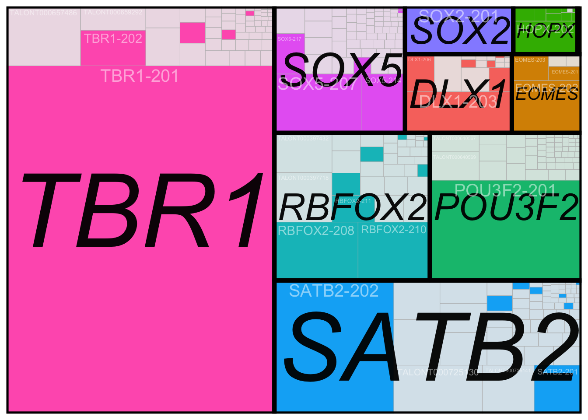

Rows: 214516 Columns: 35
── Column specification ────────────────────────────────────────────────────────
Delimiter: "\t"
chr (7): annot_gene_id, annot_transcript_id, annot_gene_name, annot_transcr...
dbl (28): gene_ID, transcript_ID, n_exons, length, 209_1_VZ, 209_2_VZ, 209_3...
ℹ Use `spec()` to retrieve the full column specification for this data.
ℹ Specify the column types or set `show_col_types = FALSE` to quiet this message.Figure 2 - Isoform Fraction analysis
Get average gene expression and isoform number
genes = cts %>% dplyr::select(annot_gene_id, annot_transcript_id,annot_gene_name) %>% group_by(annot_gene_id) %>% summarise(numIso=n_distinct(annot_transcript_id))
countMat = as.matrix(cts.collapse[,9:14])
cs = colSums(countMat) / 1000000 ## TPM normalize
countMat.tpm = t(apply(countMat, 1, function(x) { x / cs}))
isoTPM = data.frame(annot_gene_id = cts$annot_gene_id, annot_transcript_id = cts$annot_transcript_id, isoTPM=rowMeans(countMat.tpm))
genes <- genes %>% left_join(isoTPM %>% group_by(annot_gene_id) %>% summarise(geneTPM = log2(.1 + mean(isoTPM))))Joining with `by = join_by(annot_gene_id)`Calculate isoform fraction
genes_with_multiple_isoforms = genes %>% filter(numIso>1) %>% dplyr::select(annot_gene_id) %>% pull()
datExpr.tx <- cts.collapse[,c(1:2,9:14)] %>% filter(gene_id %in% genes_with_multiple_isoforms) %>% pivot_longer(-c("gene_id", "transcript_id"),names_to = "sample", values_to = "counts")
datExpr.gene = datExpr.tx %>% group_by(gene_id, sample) %>% summarise(gene_counts=sum(counts))`summarise()` has grouped output by 'gene_id'. You can override using the
`.groups` argument.datExpr.gene <- datExpr.gene %>% left_join(datExpr.gene %>% group_by(sample) %>% summarise(read_depth = sum(gene_counts)))Joining with `by = join_by(sample)`expressed_genes_with_multiple_isoforms <- datExpr.gene %>% group_by(gene_id) %>% summarise(samples_expressed=sum(gene_counts/(read_depth/1000000)>1)) %>% filter(samples_expressed >=3) %>% dplyr::select(gene_id) %>% pull()
datExpr.tx <- datExpr.tx %>% filter(gene_id %in% expressed_genes_with_multiple_isoforms) %>% left_join(datExpr.gene, by=c("gene_id", "sample")) %>% mutate(iso_usage=counts/gene_counts)
datExpr.tx$iso_usage[is.na(datExpr.tx$iso_usage)] = 0
datExpr.tx %>% group_by(gene_id) %>% summarise(expr=sum(iso_usage>0)) %>% arrange(expr)# A tibble: 12,958 × 2
gene_id expr
<chr> <int>
1 ENSG00000010932.17_3 4
2 ENSG00000162882.15_4 5
3 ENSG00000165478.7_4 5
4 ENSG00000188820.13_5 5
5 ENSG00000264449.6_6 5
6 ENSG00000075651.16_5 6
7 ENSG00000077092.19_5 6
8 ENSG00000081138.14_4 6
9 ENSG00000081320.11_5 6
10 ENSG00000101955.15_6 6
# … with 12,948 more rowsdatExpr.if = datExpr.tx %>% dplyr::select(transcript_id, sample, iso_usage) %>% pivot_wider(names_from = sample, values_from = iso_usage)
datExpr.if_avg = datExpr.tx %>% dplyr::select(transcript_id, sample, iso_usage) %>% group_by(transcript_id) %>% summarise(avgIF = mean(iso_usage))
datExpr.if_avg <- datExpr.if_avg %>% left_join(cts.collapse %>% dplyr::select(gene_id,transcript_id))Joining with `by = join_by(transcript_id)`this_df = datExpr.if_avg %>% group_by(gene_id) %>% summarise(dominantIF = max(avgIF)) %>% left_join(genes, by=c("gene_id"= "annot_gene_id"))
head(this_df)# A tibble: 6 × 4
gene_id dominantIF numIso geneTPM
<chr> <dbl> <int> <dbl>
1 ENSG00000000003.15_4 0.490 13 3.27
2 ENSG00000000419.12_5 0.628 7 0.637
3 ENSG00000000457.14_6 0.607 15 1.04
4 ENSG00000000460.17_6 0.522 15 0.357
5 ENSG00000000938.13_5 0.433 4 -1.76
6 ENSG00000000971.16_3 0.944 2 0.290this_df$numIsoQuantile = ntile(this_df$numIso,5)
this_df$geneTPMquantile = ntile(this_df$geneTPM,5)
Fig2_domIso=ggplot(this_df, aes(x=dominantIF,fill=factor(geneTPMquantile))) + geom_histogram(bins = 20) + scale_fill_brewer(palette = "Blues") + theme_bw() +
labs(x="Dominant isoform expression fraction", y="Gene count", fill="Gene\nExpression\nQuintile") +
theme(legend.title = )
Fig2_domIso
ggsave(Fig2_domIso, file="output/figures/Fig2/Fig2_domIso.pdf",width=4,height=2.5)TreePlot
library(treemapify)
df_treemap = cts %>% dplyr::select(Gene=annot_gene_name, Isoform=annot_transcript_name, novelty2, counts) %>% filter(Gene%in% c("TBR1","SATB2", "SOX5", "SOX2", "EOMES", "DLX1","POU3F2", "HOPX", "HES1", "RBFOX2"))
ggplot(df_treemap, aes(area=counts, fill=Gene, label=Isoform, alpha=(novelty2=="Known"), subgroup=Gene)) +
geom_treemap() +geom_treemap_subgroup_border(colour = "black", size = 5, alpha=1) +
geom_treemap_subgroup_text(place = "centre", grow = TRUE,
alpha = 0.95, colour = "black",
fontface = "italic") +
geom_treemap_text(colour = "white", place = "top", alpha=.5,
size = 15, grow = F)+ theme(legend.position = "none")Warning: Using alpha for a discrete variable is not advised.
df_treemap = cts %>% dplyr::select(Gene=annot_gene_name, Isoform=annot_transcript_name, novelty2, counts) %>% filter(Gene%in% c("SCN2A", "CHD8", "SYNGAP1", "ADNP", "PTEN", "FOXP1", "CHD2", "POGZ", "GRIN2B", "KTM5B", "ARID1B", "ASH1L"))
Fig5_ASDtreeplot = ggplot(df_treemap, aes(area=counts, fill=Gene, label=Isoform, alpha=(novelty2=="Known"), subgroup=Gene)) +
geom_treemap() +geom_treemap_subgroup_border(colour = "black", size = 2, alpha=1) +
geom_treemap_subgroup_text(place = "centre", grow = F,
alpha = 0.95, colour = "black",
fontface = "italic") +
geom_treemap_text(colour = "grey", place = "top", alpha=.5,
size = 15, grow = F)+ theme(legend.position = "none") +
scale_fill_brewer(palette = 'Paired')
ggsave(Fig5_ASDtreeplot, file="output/figures/Fig5/Fig5_ASDtreeplot.pdf",width=5,height=3)Warning: Using alpha for a discrete variable is not advised.